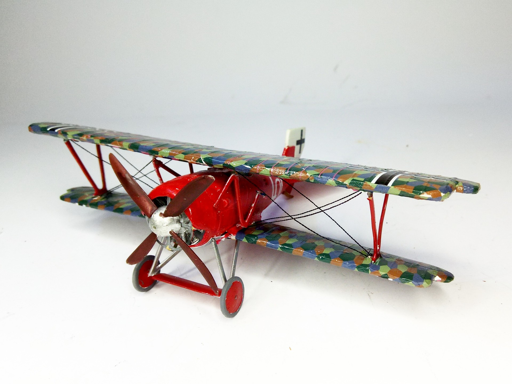
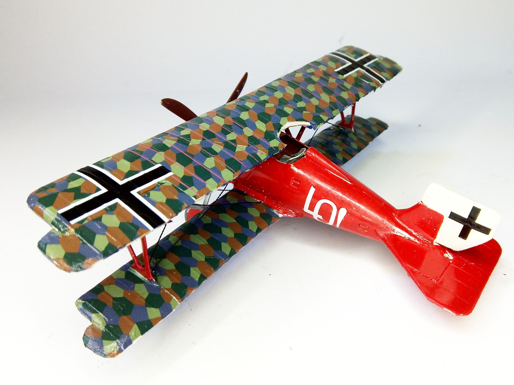

Aerei · scale model archive
Siemens Schuckert D III
Siemens Schuckert D III — Kit: KAE vacform, Scale: 1/48. Flown by Ernst Udet JaSta 4 1918 #1/48 #KAE #SiemensSchuckert #DIII

Photo gallery

English description
Flown by Ernst Udet JaSta 4 1918
#1/48 #KAE #SiemensSchuckert #DIII
Descrizione italiana
Pilotato da Ernst Udet, Jasta 4, 1918.